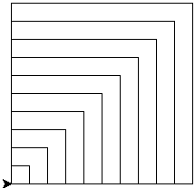
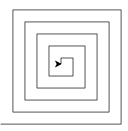

Comme ces codes contiennent beaucoup de répétitions Soulaymène se demande s'il est possible de dessiner ces
formes tout en écrivant moins de code.
Etant donné que vous êtes un élève de la section Informatique Soulaymène a demandé votre aide. Pensant un peu
vous vous rappelez que vous venez tout juste d'écrire un code de deux lignes qui affiche un
message 10 fois :
for i in range(10):
print("Bonjour Soulaymène")
Est-il possible d'utiliser cette structure et de l'adapater pour dessiner les trois formes précédentes ?
Réécrire les programmes précédents en utilisalt la boucle for.
Toutes les formes possèdent des cotés de largeurs constantes : 100 pixels. Permettre à
l'utilisateur de choisir une longueur personnalisée.
Est-il possible de combiner les trois programmes précédents en un seul programme qui :
Saisit le nombre de cotés nc de la forme à dessiner.
Saisit la largeur d'un coté lc.
Dessine une forme ayant nc cotés de largeur lc pixels.
Carrés Imbriqués
La figure suivante montre des carrés Imbriqués :

Carrés Imbriqués
Dessiner un carré de coté 200.
Dessiner un deuxième carré de coté 180.
Dessiner un troisième carré de coté 160.
Est-il possible d'utiliser la boucle for pour dessiner cette forme ? Réécrire votre programme
pour dessiner la forme désirée.
Copier/Coller le code de la question 4. Enlever une seule ligne afin d'obtneir la forme suivante :

Spirale Carrée
Ajuster le pas de la boucle pour obtenir la même forme.
Jeu de multiplication
Molka est une élève en 3ème année de base. Aujourd'hui, elle veut s'entrainer sur la table de
multiplication des nombres de 1 à 9.
Le frère aîné de Molka est un élève en 2ème TI. Il en profite pour aider sa soeur et réviser un
peu.
Il commence par écrire le code incomplet suivant :
from random import randint
v1 = 1 # Todo 1
v2 = 2 # Todo 1
res = v1 * v2
print(v1, "×", v2, "= ?")
rep = int(input())
if True: # Todo 2
print("Correct!")
else:
print("Faux!")
On vous demande de l'aider sur les Todo 1 et Todo 2.
Todo 1 : Choisir deux nombres aléatoires entre 1 et 9.
Todo 2 : Remplacer la valeur True par une condition qui vérifie si la
réponse est correcte ou bien fausse.
Tester le code final. Est-il possible de l'améliorer ?
Travail demandé
On demande d'améliorer le programme dévéloppé pour qu'il ressemble à l'exemple ci-dessous :
Permettre à l'utilisateur de choisir le nombre de questions qui seront posées par le programme.
Afficher un score final à la fin du programme pour indiquer le nombre de bonnes réponses.
cpt est la variable compteur / Vi est la valeur initiale /
Vf est la valeur finale / Vp est la valeur du pas.
Pour cpt de Vi à Vf Faire [Pas=Vp]
// Traitements
Fin Pour
for cpt in range(Vi, Vf+1, Vp):
# Traitements
Exemple 1
Compter à partir de 0 à 9 par pas de 1.
Pour cpt de 0 à 9 Faire
// Traitements
Fin Pour
for cpt in range(10):
# Traitements
Exemple 2
Compter à partir de 1 à 10 par pas de 1.
Pour cpt de 1 à 10 Faire
// Traitements
Fin Pour
for cpt in range(1, 11):
# Traitements
Exemple 3
Compter à partir de 10 à 1 par pas de -1.
Pour cpt de 10 à 1 Faire [Pas=-1]
// Traitements
Fin Pour
for cpt in range(10, 0, -1):
# Traitements
Exemple 4
Compter à partir de 1 à 10 par pas de 3.
Pour cpt de 1 à 10 Faire [Pas=3]
// Traitements
Fin Pour
for cpt in range(1, 11, 3):
# Traitements
Exemple 4
Compter à partir de 10 à 1 par pas de -3.
Pour cpt de 10 à 1 Faire [Pas=-3]
// Traitements
Fin Pour
for cpt in range(10, 0, -3):
# Traitements
Renforcement
Entiers suivants
Ecrire un programme qui permet de saisir un entier n et d'afficher les sept entiers suivants.
Donner n ? 10
11 12 13 14 15 16 17
Produit de deux nombres
Ecrire un programme qui calcule le produit de deux entiers a et b donnés sans utiliser l'opérateur
*.
On rappelle que :
2 × 5 = 2 + 2 + 2 + 2 + 2 = 10
6 × 3 = 6 + 6 + 6 = 18
Nombre de 8
Le chiffre 8 figure dans l'intervalle [1, 10] une seule fois. Il se trouve 20 fois dans l'intervalle [1, 99].
Il se trouve 300 fois dans l'intervalle [1, 999].
Ecrire un programme qui affiche le nombre d'apparition du chiffre 8 dans un intervalle [a, b] donné avec 1
≤ a < b ≤ 9999.
a ? 19
b ? 95
17
a ? 58
b ? 88
13
a ? 801
b ? 809
10
a ? 9090
b ? 9999
281
Pagination
On retrouve souvent le composant de navigation suivant dans les pages Web :
Composant de pagination
En cliquant sur les nombre de ce composant l'utilisateur peut afficher un contenu qui s'étend sur plusieurs
pages écran.
On demande d'écrire un programme qui saisit le numéro de la page actuelle visualisée par l'utilisateur et
affiche les numéros des deux pages qui précèdent et des deux pages qui succèdent sachant qu'il y a 20 pages
en tout à consulter.
Numéro de page ? 1
[1] 2 3 4 5
Numéro de page ? 11
9 10 [11] 12 13
Numéro de page ? 17
15 16 [17] 18 19
Numéro de page ? 19
16 17 18 [19] 20
Mot de passe de 4 chiffres
Pour empêcher mon petit frère de jouer trop à l'ordinateur mon père a défini comme mot de passe un nombre
composé de 4 chiffres.
Le nombre est un multiple de 5, son chiffre de milliers est plus grand que son chiffre de centaines, et le
chiffre de dizaines est le double du chiffre de centaines.
Le chiffre de centaines est non nul. Et la somme des chiffres du nombre est supérieure ou égale à 22.
En essayant de retrouver le mot de passe vous avez écrit un programme qui affiche tous les nombres de quatre
chiffres qui vérifient les propriétés indiquées :
i = u + d * 10 + c * 100 + m * 1000
i mod 5 = 0, Nombre multiple de 5 (i est un nombre de 4 chiffres)
m > c, chiffre de milliers supérieur au chiffre de centaines
d = 2 * c, chiffre de dizaines double du chiffre de centaines
c ≠ 0, chiffre de centaines non nul
u+d+c+m ≥ 22, somme des chiffres supérieure ou égale à 22